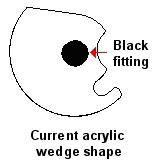
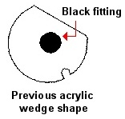
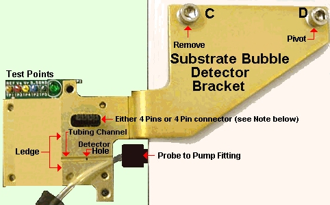
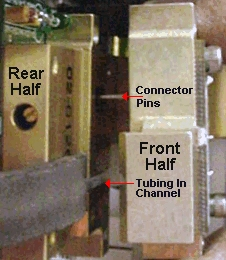

Replacing Substrate Probe
This procedure describes how to remove and replace the substrate probe.
- is defective and must be replaced.
- contains kinked tubing.
- contains worn, flared fittings or o-rings.
- must be drained for adjusting the substrate bubble detector.
Replacing the upper tubing is difficult because of limited room; however, this procedure can be completed with the substrate pump mounted in the normal operating position.
If replacing a previous version substrate probe, order the entire substrate probe mod kit.
| Current version | Previous version |
|---|---|
|
|
|
 |
 |
|
|

Note: Earlier bubble detectors may have four pins extending from bracket with the connector on the removable portion of the bubble detector.
